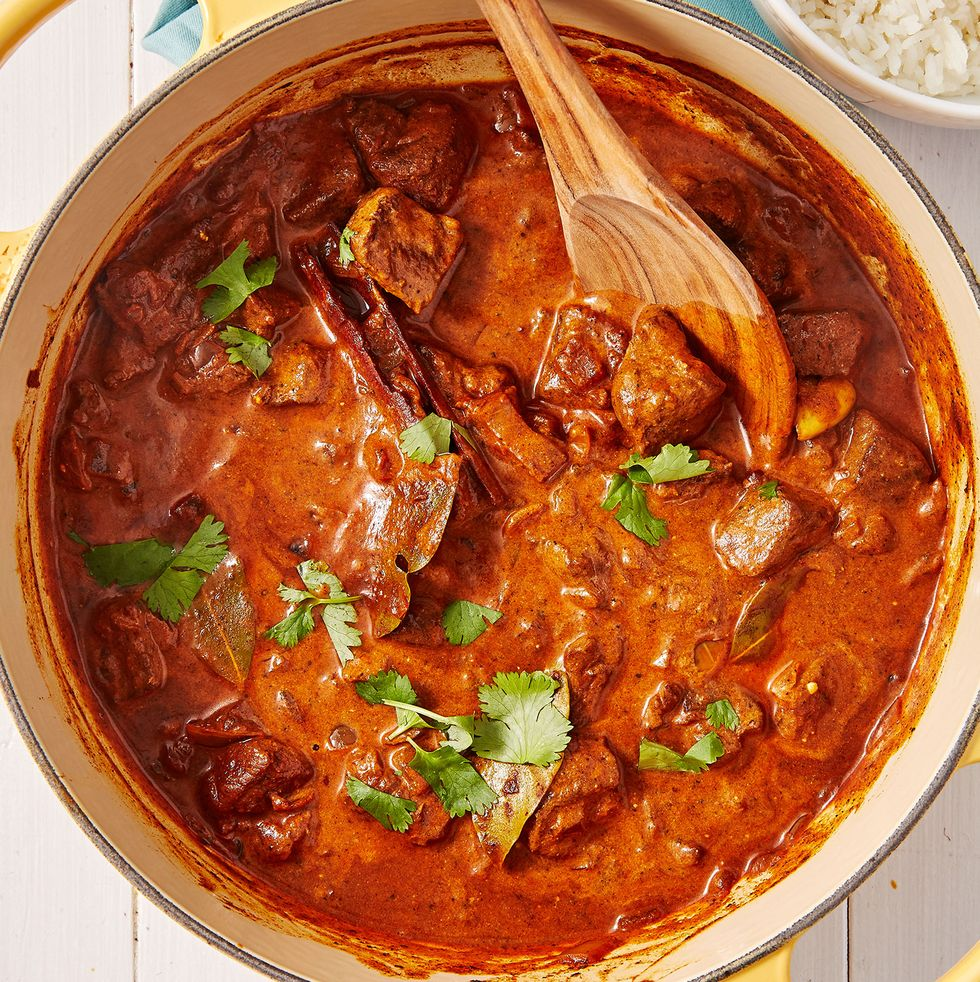

About Lamb Rogan Josh
Rogan josh is my favorite Indian curry, and this recipe makes it easy to enjoy at home. The lamb falls apart in a rich tomato sauce that's flavored with dry-roasted spices. Serve with basmati rice and naan to soak up every bit of the delicious sauce!
Ingredients
- 1/3 cup plain yogurt
- 2 cloves garlic, minced
- 2 teaspoons grated fresh ginger
- 2 teaspoons ground coriander
- 1 1/2 teaspoons ground cumin
- 1 teaspoon cayenne pepper
- 1 teaspoon paprika
- 1/2 teaspoon ground turmeric
- 1 1/2 pounds lamb shoulder, cut into 2-inch pieces
- 2 medium onions, finely chopped
- 1 1/2 tablespoons tomato paste
- pinchof salt
- 2 tablespoons unsalted butter
- 1 1/2 cups boiling water
- 2 bay leaves, crumbled
- 2 green cardamom pods, split open at the top
- 1 (2-inch) cinnamon stick
- 4 whole cloves
- 1/2 teaspoon nutmeg
- 2 tablespoons freshly chopped cilantro
- 1 tablespoon freshly chopped mint
Recipe instructions (taken from the book)
- Mix yogurt, garlic, ginger, coriander, cumin, cayenne, paprika, and turmeric in a bowl until well combined.
- Place lamb in a nonstick saucepan; add onions and cook over medium heat until onions start to sizzle. Stir in yogurt mixture; reduce heat to low, cover, and cook, stirring occasionally, until lamb has released all its natural juices, about 30 minutes.
- Remove the lid, increase heat to medium and cook, stirring frequently, until sauce has reduced to a paste-like consistency, about 5 minutes.
- Stir in tomato paste, salt, and 1 tablespoon of butter. Reduce heat to low; cook and stir for 3 to 4 minutes. Add boiling water, cover, and simmer for 15 minutes.
- Melt remaining 1 tablespoon butter over low heat. Add bay leaves, cardamom, cinnamon, and cloves; allow them to sizzle for 30 seconds. Stir in nutmeg and pour sauce over lamb; mix well, cover, and cook for 10 minutes. Stir in chopped mint and coriander.
Return to top
Return to main page